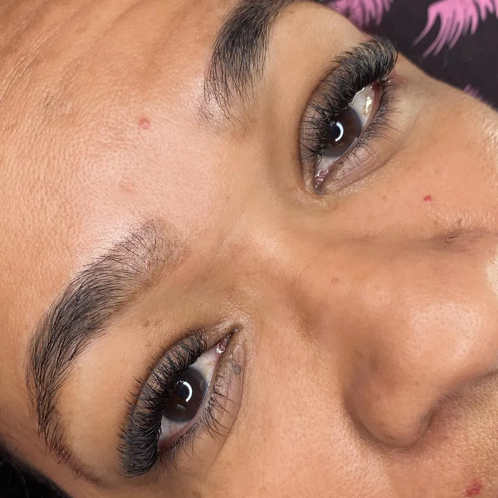
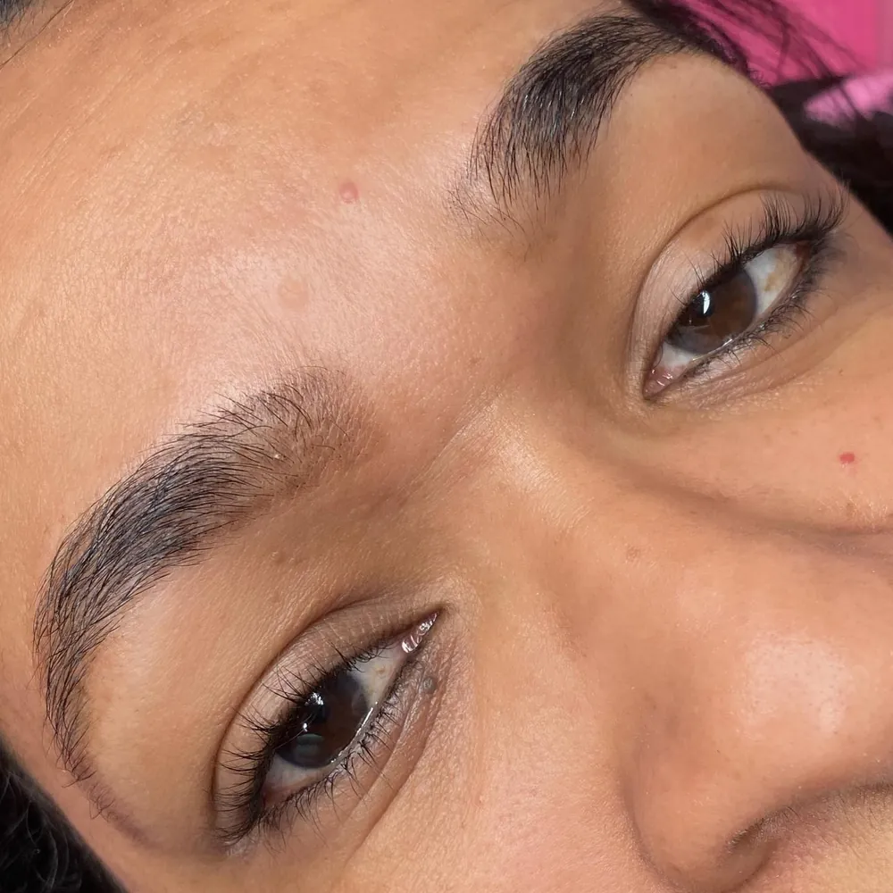
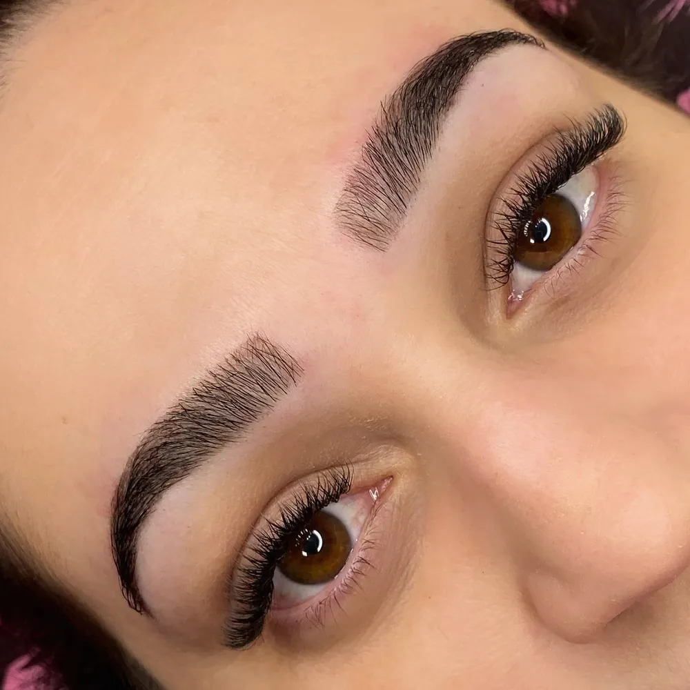
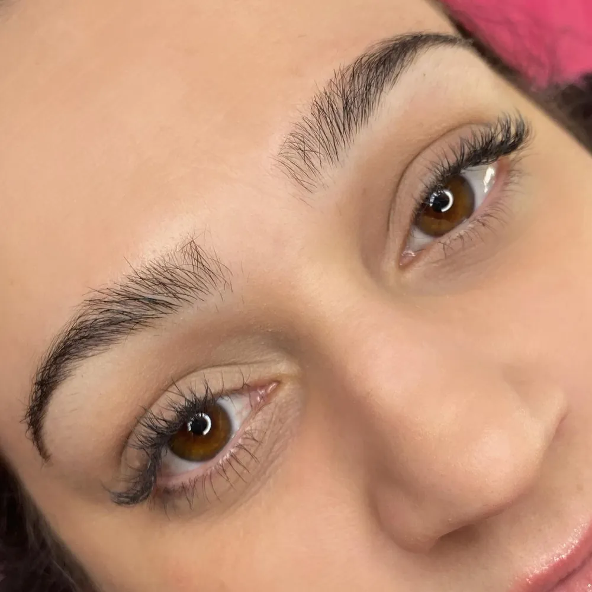
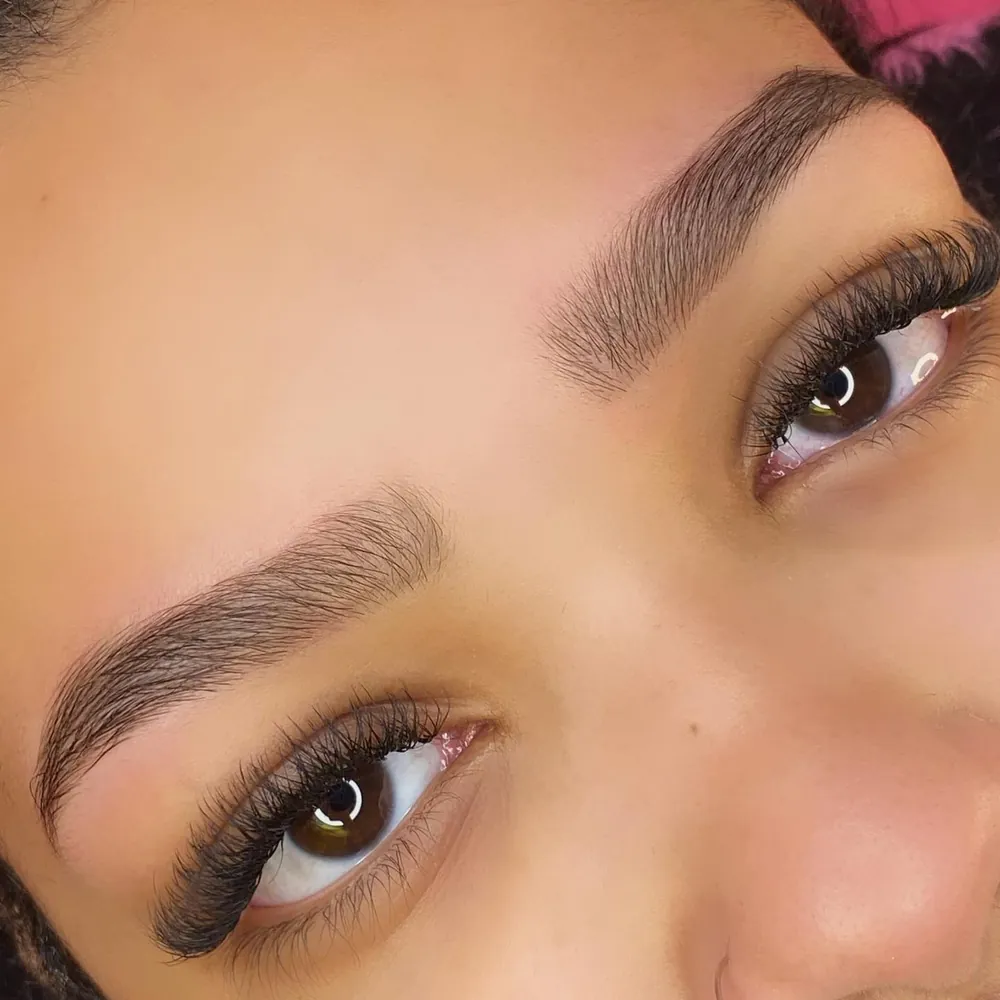
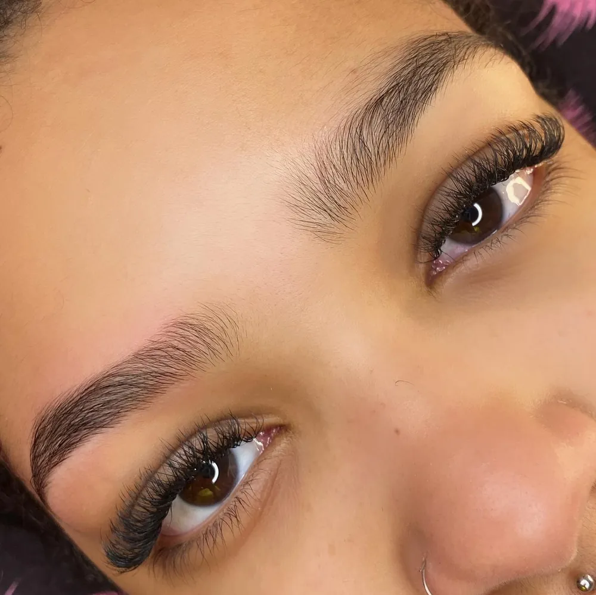
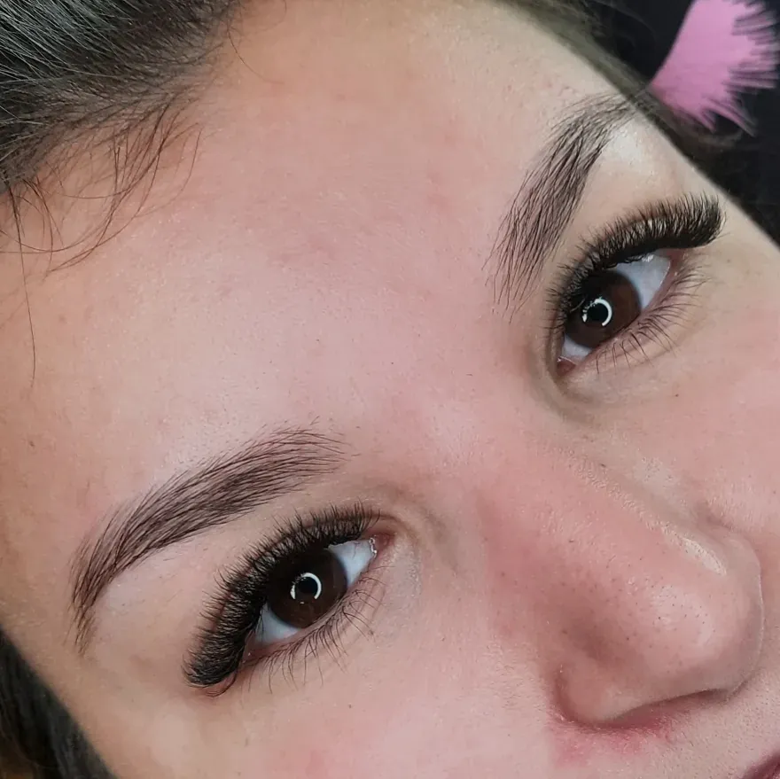
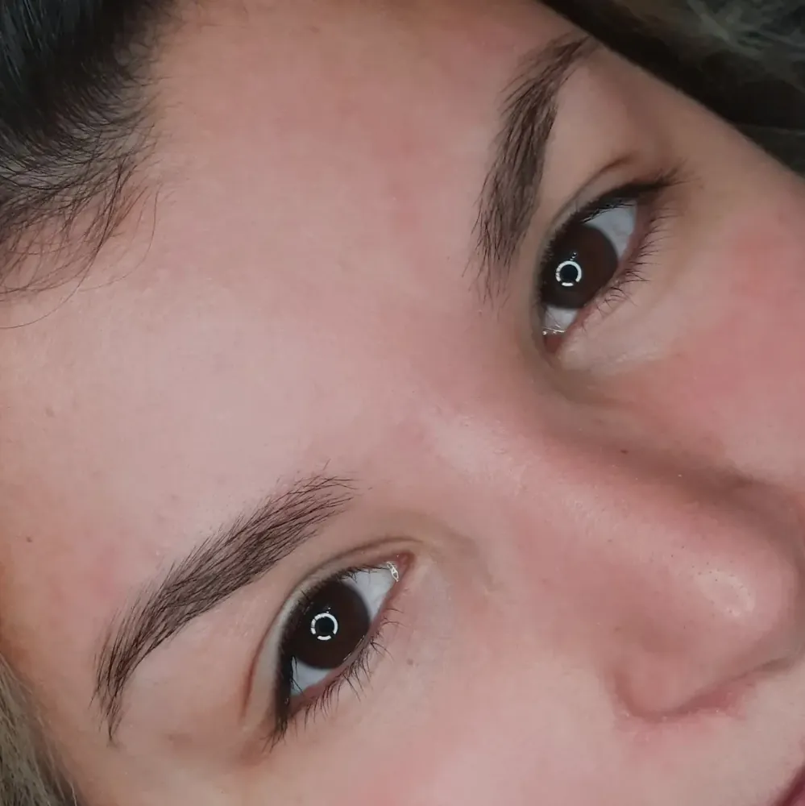
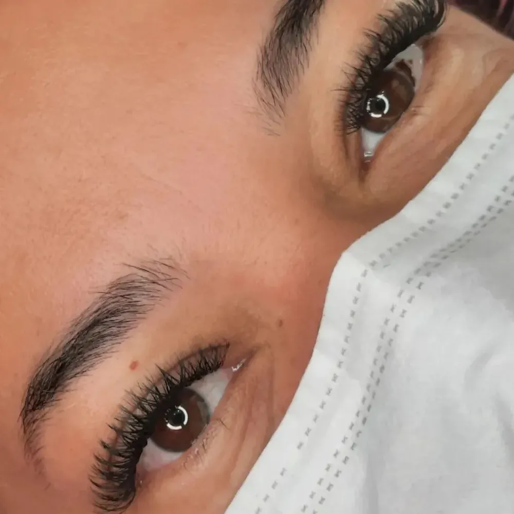
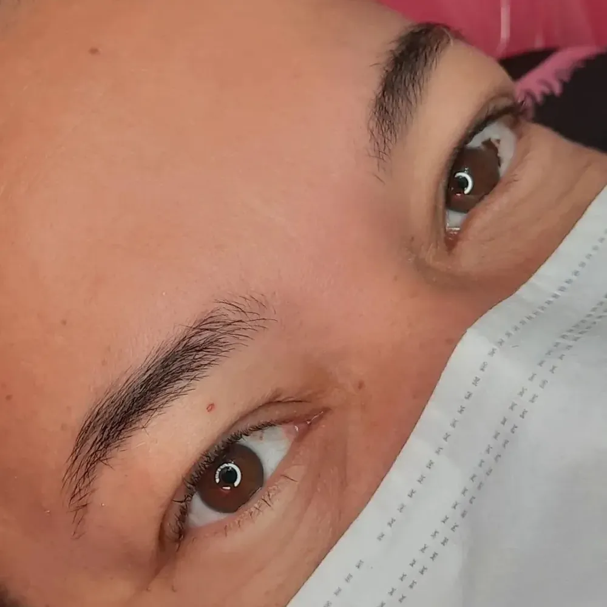

Lash design · Sobrancelhas
Olhar marcante, do seu jeito.
Extensão de cílios e design de sobrancelhas com técnica, delicadeza e atenção a cada detalhe, para realçar o seu olhar com naturalidade.
Agendar avaliação- Extensão de cílios
- Design de sobrancelhas
- Brow lamination
[CONFIRMAR: cidade]
Serviços
Cuidado completo para o seu olhar.
Toque em um serviço para ver como funciona e alguns trabalhos.
Extensão de cílios
Extensão fio a fio, com o estilo e o volume pensados para o formato do seu olho e para o resultado que você deseja, do mais natural ao mais marcante.
- Estilo escolhido para o seu olhar
- Volume brasileiro e outras técnicas
- Acabamento delicado
Design de sobrancelhas
Design personalizado para valorizar o formato do seu rosto, com atenção à simetria e ao desenho, e acabamento com henna quando faz sentido para você.
- Desenho pensado para o seu rosto
- Simetria e proporção
- Opção com henna
Brow lamination
Técnica que alinha e disciplina os fios da sobrancelha, dando um aspecto mais preenchido e arrumado. Combina muito com a extensão de cílios.
- Fios alinhados
- Efeito de sobrancelha mais cheia
- Combina com extensão de cílios
Cursos
[CONFIRMAR: descrição dos cursos] Fale comigo para saber sobre turmas, datas e conteúdo.
- Turmas e datas sob consulta
- Tire dúvidas pelo WhatsApp
Resultados
Veja a transformação.
Arraste para comparar o antes e o depois.










Resultados variam de pessoa para pessoa. Imagens publicadas com autorização da cliente.
Atendimento
Como é o atendimento.
Do primeiro contato à manutenção, tudo com calma e carinho.
Agendar avaliação- 01
Conversa
Você conta o que deseja e eu analiso o formato do seu olhar e do seu rosto.
- 02
Escolha do estilo
Definimos juntas o volume, o comprimento e o desenho que combinam com você.
- 03
Aplicação
Feita com técnica e cuidado, no tempo necessário e com conforto.
- 04
Manutenção
Orientações de cuidado e retornos para manter o resultado bonito por mais tempo.
Sobre
Oi, eu sou a Isabela.
Sou lash designer e adoro realçar o olhar de cada cliente, com delicadeza e técnica.
Cada olhar é único. Por isso o estilo, o volume e o design são pensados caso a caso, para o resultado ficar bonito e confortável.
Estou sempre me atualizando para entregar o melhor atendimento.
Isabela Fernandes
Lash designer
Galeria
Trabalhos
Dúvidas
Perguntas frequentes.
Como funciona o primeiro atendimento?
Conversamos sobre o que você gosta, analiso o seu olhar e definimos juntas o estilo ideal antes de começar.
Qual estilo de cílios combina comigo?
Depende do formato do seu olho e do efeito que você quer, do mais natural ao mais marcante. Eu te oriento na escolha.
Preciso fazer manutenção?
Sim, a manutenção periódica ajuda a manter o resultado bonito. Explico o intervalo ideal para o seu caso.
Posso fazer cílios e sobrancelha no mesmo dia?
Em geral sim. Combine pelo WhatsApp para eu reservar o tempo necessário.
Como agendo?
É só clicar em qualquer botão desta página e falar comigo pelo WhatsApp.
Vamos realçar o seu olhar?
Chame no WhatsApp e agende o seu horário.
Agendar pelo WhatsApp- Endereço[CONFIRMAR: endereço]
- Horário[CONFIRMAR: horário de atendimento]
- WhatsApp[CONFIRMAR: WhatsApp]
- Instagram@bela_lashes_sobrancelhas_